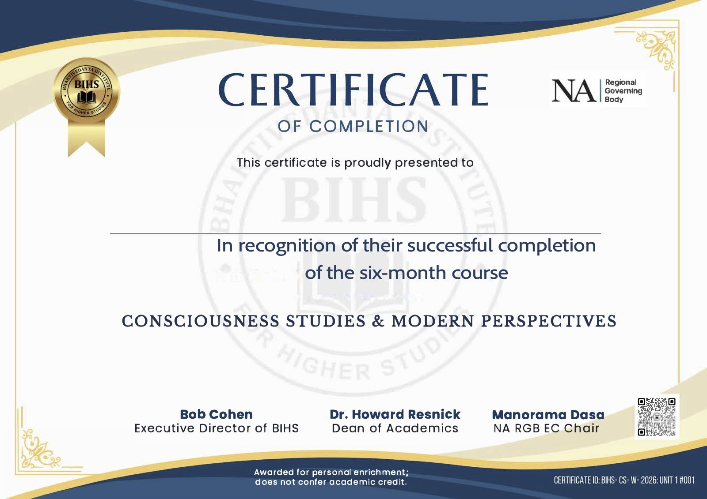

The Learning Journey
Celebrating six months of inquiry, dialogue & discovery
Thank you for being part of the inaugural BIHS Consciousness Studies course — a six-month journey exploring consciousness, philosophy, science, metaphysics, cosmology, and the nature of reality.
Congratulations — and thank you.
From January through July, you brought your curiosity, thoughtful questions, reflections, and commitment to this shared educational journey. Whether you participated live, continued through the recordings, completed every assignment, or are still progressing at your own pace, your presence helped create a meaningful community of inquiry.
Your certificate of completion
Participants who complete the full course requirements will receive the BIHS Consciousness Studies Certificate of Completion. Many of you are already very close, and those who are still completing assignments may continue working through the course until December 6, 2026.

Where will your learning journey take you next?
Four new non-credit enrichment courses are being prepared for those who wish to continue learning with BIHS. Additional information and registration details will be shared soon.
Biology and Consciousness
Life, Mind, and the Living World
Explore questions at the intersection of biology, consciousness, philosophy of biology, and the nature of living systems.
Transformative Communications
Dialogue, Leadership, and Meaningful Change
Develop practical approaches to communication, dialogue, and leadership that support understanding, collaboration, and constructive transformation.
Philosophy in Dialogue
Reasoning, Debate, and the Search for Truth
Strengthen philosophical reasoning, learn to examine arguments carefully, and engage disagreement through thoughtful, respectful dialogue.
Vaishnava Tradition in the West
History, Culture, and Global Influence
Examine the development, transmission, and cultural impact of the Vaishnava tradition in modern Western contexts.
Made possible together.
This inaugural course was made possible through a joint endeavor of the Bhaktivedanta Institute for Higher Studies and RBG North America, together with the dedication of our faculty, organizers, volunteers, and the generous donors who supported scholarships and educational access. We offer our sincere gratitude to everyone who helped make this learning community possible.
The completion of one course is not the end of inquiry, but the opening of another door.
Thank you for being part of the inaugural BIHS Consciousness Studies cohort. We look forward to continuing the journey of learning, dialogue, and discovery together.